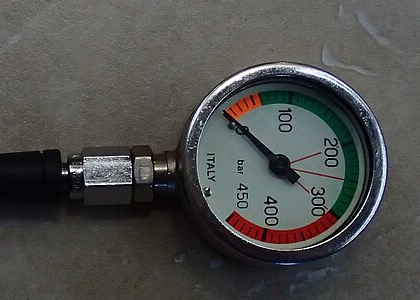

Kurz P1 – Fyzika
P★
Matěj Hron
Svaz potápěčů České republiky
data-slide-type="title" titulní slide kurzu (všechny kapitoly: vzorník titulních slidů)
Tlak
data-slide-type="title" titulní slide kapitoly, číslo kapitoly a témata doplní renderTitleSlide z dat kurzu
Fyzika – plán
- Fyzika, teorie (dnes)
- Fyziologie
- Plánování ponorů, dekompresní postupy
data-slide-type="content" text nebo odrážky
Hustota
Hustota je definovaná jako hmotnost tělesa na jednotku objemu.
ρ = m/V [kg/m³]
Příklady látek:
| Látka | Hustota [kg/m³] |
|---|
| Voda sladká | 1 000 |
| Voda slaná | 1 020–1 030 |
| Led | 920 |
| Vzduch (normální tlak, 10 °C) | 1,25 |
| Olovo | 11 340 |
| Ocel | 7 850 |
data-slide-type="content" + course-core-cols + data-slide-fit="compact"
Stlačování plynů
Nebezpečí malých hloubek
Při výstupu z 10 m na hladinu se objem balónku zvýšil 2×.
Nikdy nezadržujte dech!
Dýchejte normálně!
část těla course-warning (varování se značkou) a course-alert v textu
Fyzika – osnova výcviku
P★: T4 Základy potápěčské fyziky (2 × 45 min)
- Základní fyzikální pojmy spojené s potápěním (veličiny a jednotky, vysvětlení pojmů).
- Atmosférický, hydrostatický a celkový tlak, přetlak, podtlak (vysvětlení pojmů, vzájemná souvislost, výpočet celkového tlaku v určité hloubce).
- Vliv tlaku na plyny, kapaliny a tuhé látky.
- Složení vzduchu, hustota vzduchu.
- Boyleův-Mariotteův zákon (izotermický děj) ve vztahu k potápěčské praxi (praktické příklady a výpočty).
- Tělesné a přídavné dutiny, nebezpečí jejich poškození, nutnost vydechování při výstupu.
- Kompenzace tlaku ve středouší a v masce.
- Nebezpečí malých hloubek.
- Archimedův zákon, vyvážení potápěče, změny vyvážení během ponoru.
Citace z osnovy výcviku SPČR (CMAS), kurz P★
data-slide-type="quote" + data-slide-fit="compact"
Závislost hustoty na teplotě
- Většina látek při ochlazování zvětšuje hustotu.
- Anomálie vody: voda má největší hustotu při 4 °C.
- „Těžká“ voda vlivem gravitace klesá dolů. Proto v zimě promrzá voda od hladiny,
a to umožňuje rybám přežít zimu.
- Led je lehčí než voda, plave na hladině a dokonce funguje jako izolace proti ochlazování
vody výměnou tepla se vzduchem.
data-slide-type="models" + data-slide-fit="compact", ve vzorníku náhledy simulátor neotevírají
Tlak
Tlak udává, jak velká síla působí kolmo na jednotku plochy.
p = F/S [Pa]
data-slide-type="figure" text a schéma nebo obrázek s popiskem
Tlak – jednotky, příklady
Stejná síla, různě velká plocha
5 N na hrotu jehly 0,1 mm² = 50 MPa = 500 bar
5 N ≈ tíha půllitru vody
Jednotka pascal (Pa) je (nejen) pro účely potápění malá:
1 MPa = 1 000 kPa = 1 000 000 Pa
100 kPa = 0,1 MPa = 1 bar
1 atm = 101,325 kPa ≈ 1 bar

Foto: Peter Southwood, CC BY-SA 4.0,
Wikimedia Commons, oříznuto.
data-slide-type="figure" se dvěma ilustracemi course-illustration: vzor stylu ilustrací (T6)
Stlačování plynů, tělní dutiny
Co se při sestupu děje: krátká odpověď, nejvýš dva řádky.
výčet menším písmem
Odpověď pro druhý obrázek.
výčet a drobný odkaz na zdroj
data-slide-type="figure" + course-core-descent: šipka sestupu jako osa mezi dvěma obrázky (U15, slide 27)
Tlak v plynu
Tlak je vyvolán nárazy částic plynu do stěn.
Ale na čem závisí?
- Víc částic (látkové množství n) ⇒ větší tlak
- Vyšší teplota T ⇒ větší tlak
- Větší objem V ⇒ menší tlak
Stavová rovnice ideálního plynu:
p = nRT/V,
pV = nRT
data-slide-type="figure" se zlomkem course-frac, implikacemi course-implications a animací částic (T28, slide 22)
Tlak a skupenství
Pevné látky
- Částice blízko sebe, vázány v krystalické mřížce.
- Při působení tlaku nemění tvar ani objem.
krystalická mřížka
Kapaliny
- Částice víc od sebe vzdáleny než u pevných látek.
- Tvoří hladinu.
- Mají stálý objem, ale tvar mění podle nádoby, kde jsou umístěny.
- Tlak vyvolaný vnější silou, která působí na kapalné těleso v uzavřené nádobě, je ve všech
místech kapaliny stejný (Pascalův zákon).
- Jsou prakticky nestlačitelné.
hladina, tvar podle nádoby
tlak se šíří všude stejně
data-slide-type="figure" s řadami course-row: text a jeho ilustrace vedle sebe (T25, slide 13)
Celkový tlak
Příklad: Jaký je tlak v moři v hloubce 10 m?
Ukázat postup
- ph = 10 · 1 000 · 10 Pa = 100 000 Pa = 1 bar
- p = 1 + 1 = 2 bar
p = h/10 + 1 [bar]
Moře
| h [m] | p [bar] |
|---|
| 10 | ?2 |
| 40,5 | ?5,05 |
| 66 | ?7,6 |
data-slide-type="calc" + data-slide-fit="compact", postup v odkrytí a tabulka k doplnění (klik na otazník)
data-slide-type="practice"